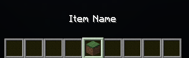

Basic Config Beispiel
In diesen Artikel wir Ihnen per Beispiel praktisch erklärt, ein Item zu erstellen. Die minimalste Config ist folgende
id: "liquip:test_item"
name: "Item Name"
material: "minecraft:grass_block"
Wie Sie sehen, erstellen Sie Items, durch das Ausfüllen mehrerer Tags. Dabei ist es wichtig zu beachten, dass die Tags
id:,name: und material: nicht optional sind. Das heißt das diese Tags in jeder Config existieren müssen.
Jedoch gibt es noch weitere optionale Tags, durch die Sie Ihre Config erweitern können:
recipes:lore:features:enchantments:modifiers:custommodeldata:
Diese Tags erläutern wir in der Verbesserten Config.
ID-Tag
Der Tag id: wir benutzt, um die Id eines Items festzulegen. Wie in Vanilla Minecraft hat alles einen nicht visuellen
Namespace. Dieser wir verwendet, um sich mit dem Command /liquip give <id> jedes Liquip-Item geben zu lassen.
Normalerweise verwendet man Namespaces. Das sind einheitliche Bezeichnungen von jedem Item,
also <namespace>:<item_name>. Der Namespace von allen offiziellen Liquip-Items ist liquip:.
Name-Tag
Der Tag name: wird für den visuell sichbaren Namen verwendet. Dieser Tag unterstützt außerdem Lehrzeichen, was bei
der ID nicht möglich ist.
Material-Tag
In diesem Tag, müssen Sie das Item auswählen, welches darauffolgend auch angezeigt wird.
Endergebnis
Unser TestItem sieht so aus:

Erstellt mit dieser Config:
id: "liquip:test_item"
name: "Item Name"
material: "minecraft:grass_block"